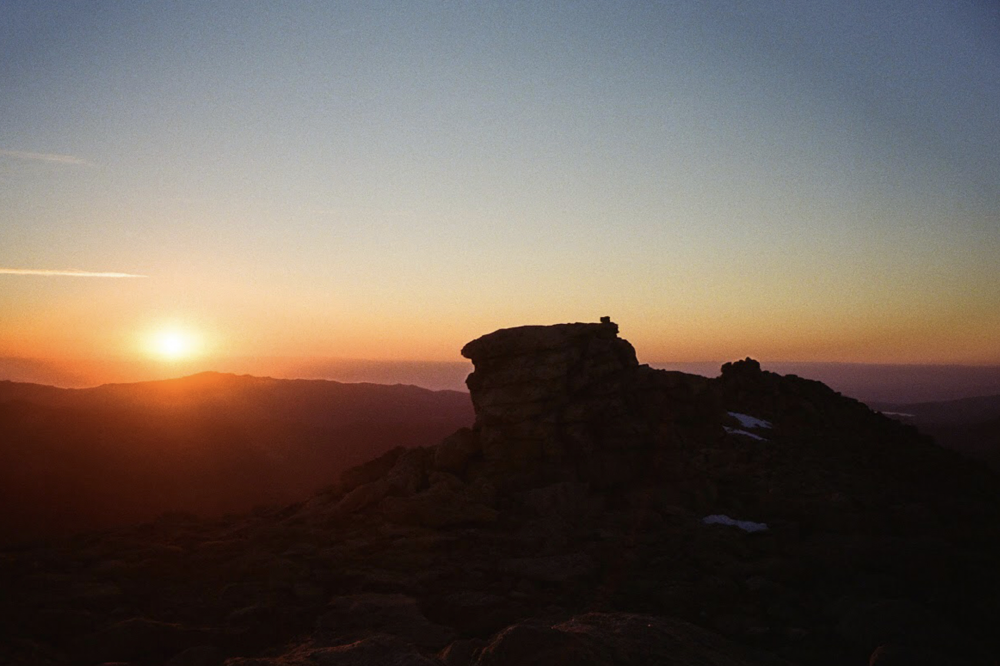

Selected Scenes in the Winds

Sunrise behind Chimney Rock, on the way to Wind River Peak, 6/22/2021
1. It was our second day in the range, and already it felt profound. We were talking about Wind River Peak and the sky. The moon rose above the horizon in a perfect crescent. For most of us, it was the starriest night of our lives.
2. The first layover day could not have come sooner. Our campsite location was unbelievable – a few hundred feet below tree line, with a full view of the massive granite bowl that we’d have to cross a day later. We learned that day the bowl is called a cirque. But everyone was tired, and scared of trying to make that ascent out of the bowl with packs that felt staggeringly heavy on flat ground. So we were glad to sit around, eat some of the food out of our packs, and wonder how 25 more days of this would feel.
3. I didn’t understand why there were mosquitos at 11,000 feet. This was the campsite I’d looked forward to for a week, that I hoped would terminate the chain of increasingly infested pondside sites. It was probably the most beautiful place I had seen at that point. It crushed my hopes that I could enjoy, or do anything other than endure, the second half of the trip.
4. I got out the maps, examined the topo lines, and then made sure to tell everyone we had 1500 feet of elevation gain the next day. Fortunately, the group found it irrelevant that the 1500 feet would be a gorgeous, panoramic trail up through the magnificent Cirque of the Towers. Some people travel hundreds of miles just to see the Cirque of the Towers. The headline, as desired, was the 1500 feet. It was no fun being miserable on my own.
5. After a confusing series of trail junctions in swampy, dense forest, the general feeling was that we were very lost. Our pace had slowed dramatically as the maintained trail gave way to a mess of deadfall and indistinct tread. At one point we stopped after navigating around a particularly atrocious set of fallen trees. Everyone’s feet hurt, and the prolonged frustration was slipping into hopelessness. But we were not actually lost. I raised my voice slightly, pointed out this fact, and promised everyone a lot of warm chili mac if we just kept moving. Our sole ten-mile day ultimately only ended after sunset, but it ended where it needed to – a very doable five miles out from the trailhead where we would, after 29 days, rejoin civilization.
6. Wearing the same clothes as I had for the past month, sitting alone on a gravel road, I felt some of the greatest satisfaction of my life. My back had been against the wall for three weeks and now, quite suddenly, it wasn't. I knew that it was mostly a wall of my own creation. But for the first time, I had felt my body try to panic and saw that my mind would fight back.
7. The clouds broke, I saw the ridgeline, and for a moment was totally overwhelmed. Everything tensed. After a year of trying to figure out what had happened in the Winds, and what I would feel if I went back, I still had difficulty parsing all the different questions and memories that were flung back at me at Elkhart Park.
8. Next time, I was on a crusade. I started down the Pole Creek trail electrified. There was a very eighteen year old sense of destiny.
9. Ascending Fremont was hard. At 13,000 feet I was stopping every few minutes to relieve the acid in my legs and check my elevation; at 13,750 feet, and 1 pm, I made the summit. It was a dramatic scene. Gannett was shadowed by a storm cloud to the north, and the massive glacier on Fremont’s sweeping east side was by far the biggest I had seen. I was around a thousand feet higher from sea level than I had ever been and in an unbelievable realm of alpine terrain. I stared out alone at the clouds and peaks and felt defiant.
10. But Gannett, strangely, was not very hard. It was fun and easy. If the next day wasn’t a nightmare, I might have had to edit my ideas about the Winds right then.
11. Another storm was behind me and my destination trailhead was ahead. It was closer than it had been in 45 miles. I knew everything hurt, I knew I was alone, I knew I couldn’t slow down. I didn’t know or care what the final stretch would look like. On the wide barrens of Goat Flat, I tried to stamp out remaining bits of weakness with the curious expectation that the process was a reverse path toward being happy.